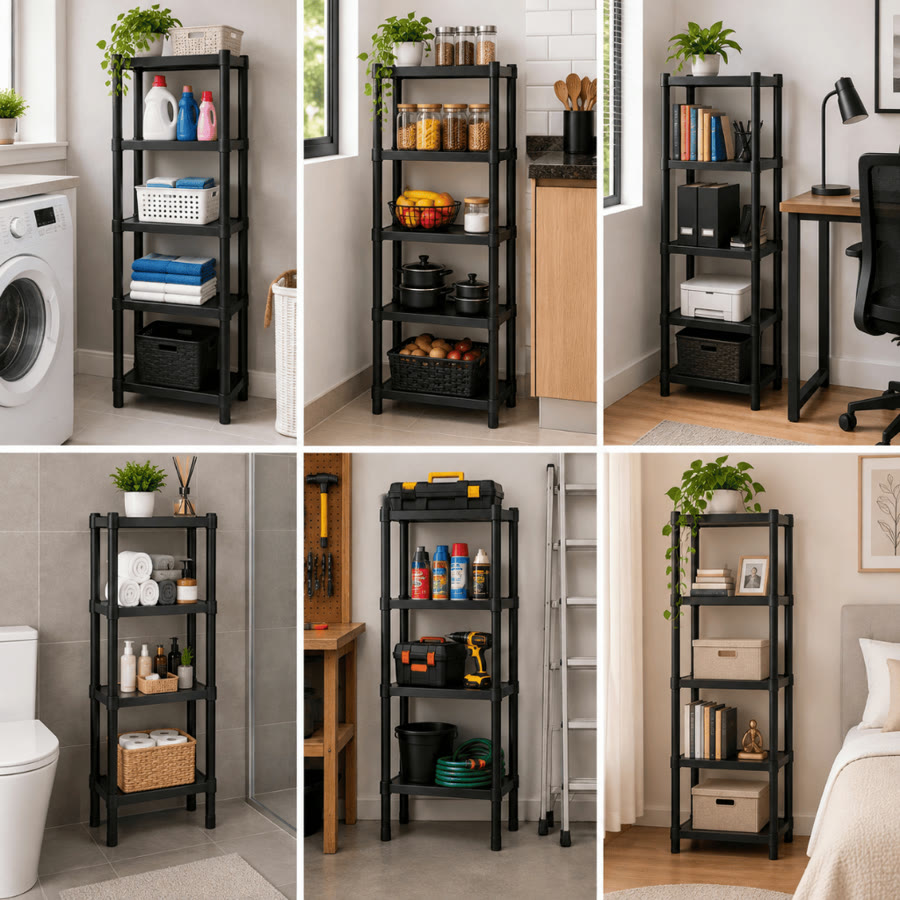
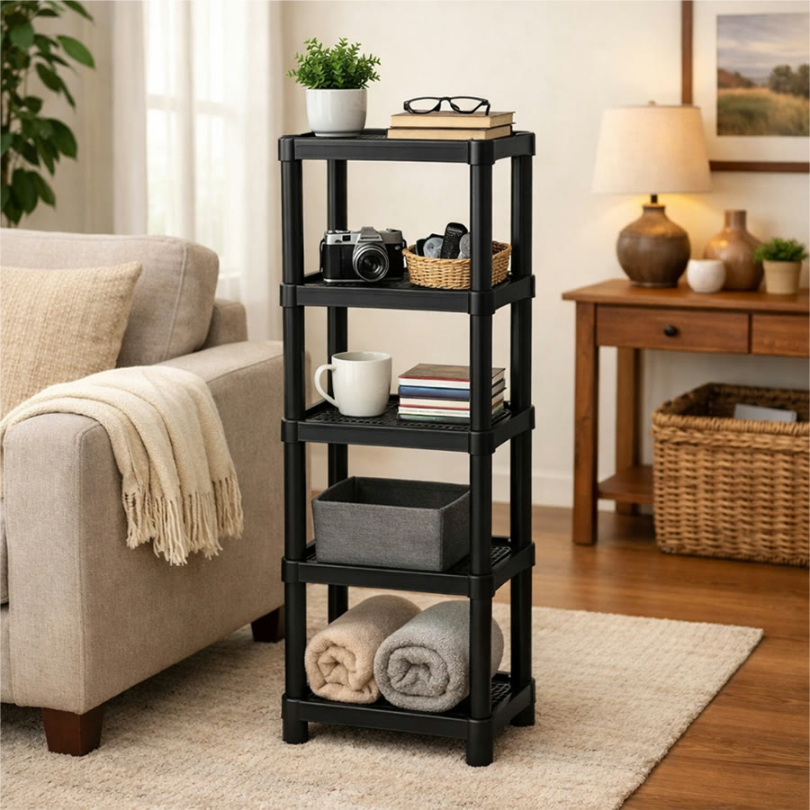
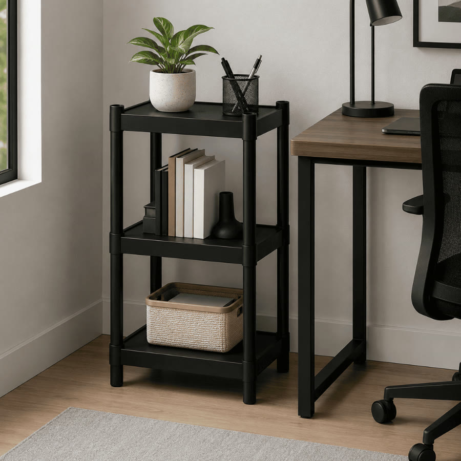
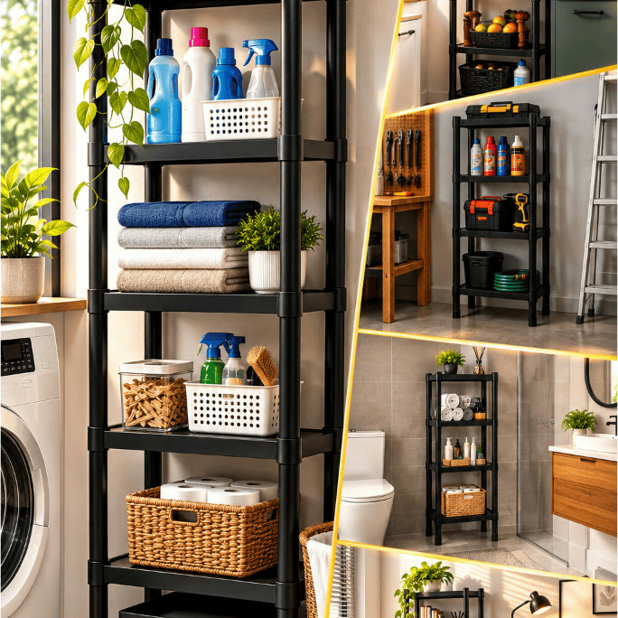

Achado nº 28
Estante multiuso modular de 2 a 7 andares





O que diz a página oficial do produto
- Estante de plástico modular vendida com 2 a 7 andares; a quantidade de prateleiras é escolhida no anúncio
- Feita de polipropileno; vem desmontada e é de montar e desmontar
- Cada andar mede 35 cm por 25 cm; a de 2 andares tem 45 cm de altura e a de 7 andares, 195 cm; são cerca de 28 cm entre uma prateleira e outra
- A ficha técnica informa peso suportado de 8 kg
- Segundo o anúncio, serve para banheiro, cozinha, quarto, lavanderia, escritório e área de serviço
- Na Shopee, tem nota 4,9 com mais de 7 mil avaliações e mais de 10 mil vendidos
Link de afiliado: se você comprar por ele, a Achadaria pode receber uma comissão, sem custo extra para você. Preço, estoque e entrega são da loja e podem mudar; confira lá antes de comprar.